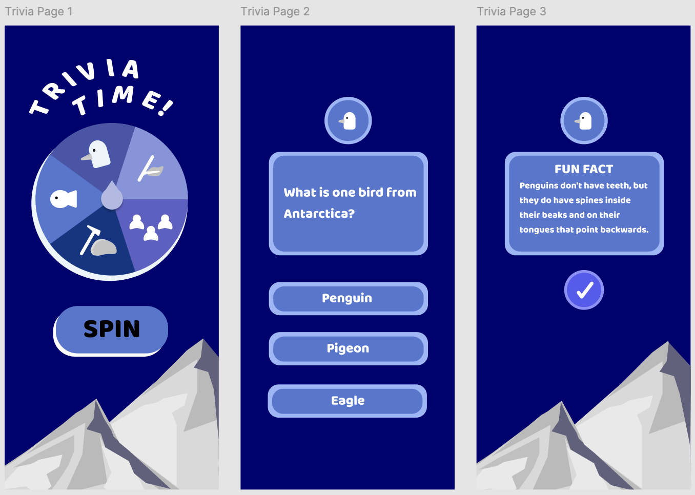

Role: Trivia page developer, content designer, Firestore integration
Tools: Flutter, Dart, Firebase (Firestore, Auth)
This mobile app gamifies Antarctic conservation through trivia questions, daily missions, and animal collection. Users spin a wheel to get category-specific trivia questions and earn coins for correct answers. I designed and built the trivia flow, including category logic, Firestore data loading, fun fact displays, and user rewards.
